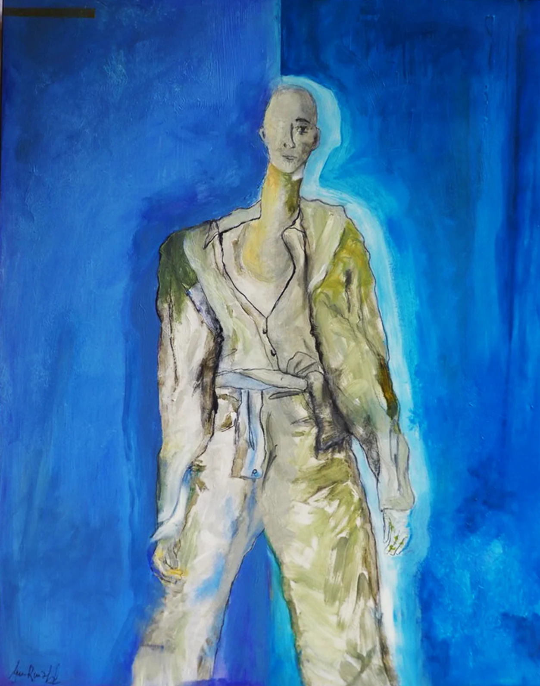
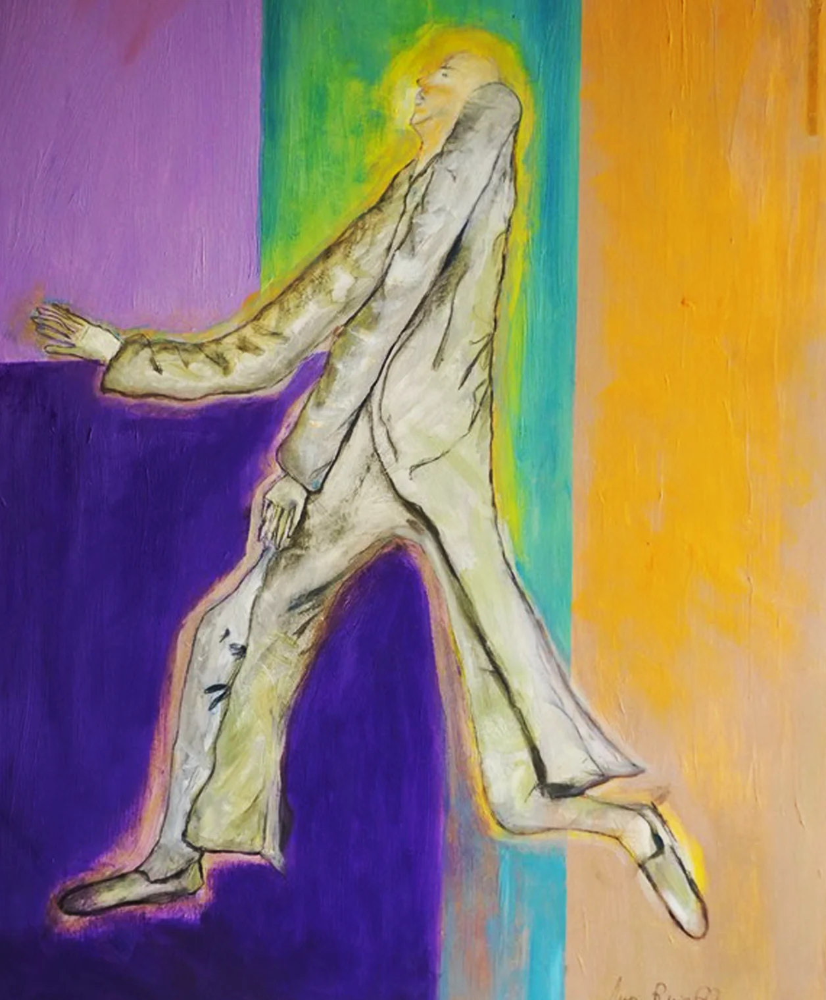
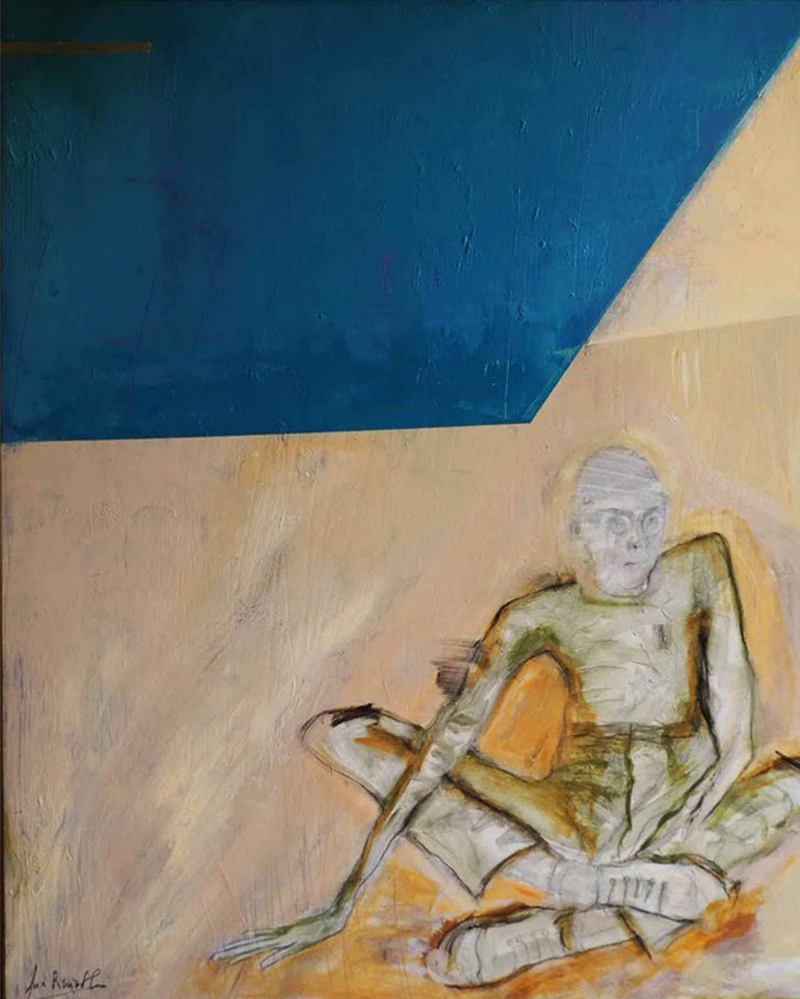

Peau d'âne (2024)
Presentación de la exposición
La ropa es una cartografía de lo íntimo: dibuja los contornos de lo que somos, de nuestros deseos, de nuestros miedos, de nuestras historias personales. Cada elección revela un fragmento de nuestra geografía interior. Las prendas tocan lo más profundo de nuestro ser; de forma inconsciente, cuentan cosas sobre quiénes somos y sobre nuestros estados de ánimo, como un lenguaje secreto.
Las prendas son los mapas de nuestro interior, las huellas de nuestros paisajes secretos. Dibujan los contornos de lo invisible, revelan los pliegues del alma, los valles de nuestros miedos, las cumbres de nuestras emociones.
En esta exposición, la ropa se vuelve pintura y revela una geografía íntima donde cada trazo, cada color, cada degradado de grises, cada torsión cuenta una historia de nuestros cuerpos. Como mapas, guían por los territorios de la identidad: entre sombra y luz, entre lo que mostramos y lo que escondemos.
Aquí, estas ropas-mapas nos invitan a un viaje: el de descubrirnos a nosotros mismos, a los demás y los mil rostros de lo íntimo. La pintura se convierte en el reflejo de nuestra cartografía interior, un eco visual de quienes somos.
Prendas


